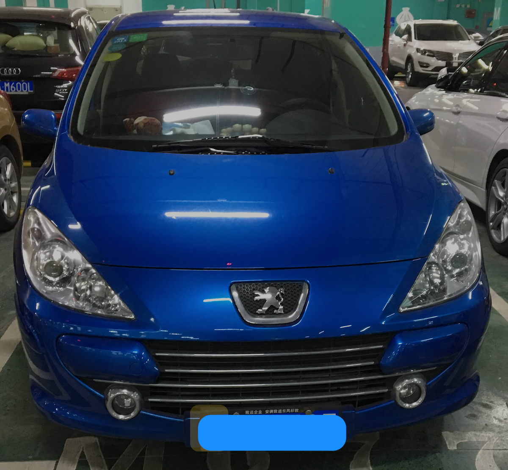

换车记一
Posted on Sun 23 June 2024 in Journal
| Abstract | 换车记一 |
|---|---|
| Authors | Walter Fan |
| Category | learning note |
| Status | v1.0 |
| Updated | 2024-06-23 |
| License | CC-BY-NC-ND 4.0 |
我的小狮子（东风标致307）陪伴了我十三年了， 它是我人生第一辆车，它的颜色称为爱琴海蓝，看到它的那天，阳光明媚，照耀在它的身上，显得轻盈亮丽，魅力四射，第一眼我就爱上了它。和它相处久了，逐渐有一种人车合一的感觉，手握方向盘，脚踩油门，能去任何想去的地方。

还记得刚拿到车不久，我就撞坏了车右前方的大灯，心疼的睡不着觉，记得还在上幼儿园的女儿陪我一起洗车，记得开着它自驾去到了响洪甸的飞机场，一脚油门踩到底，有一种飞翔的感觉，记得开着它带着家人却湿地公园野餐，记得开着它和朋友去万佛湖游玩，记得好多它陪伴我的美好时光。
时光荏苒, 十三年过去了，它也从一个少女变成了老妪，虽然还能健步如飞，在车流中穿梭自如，却疲态尽显，车窗摇不动了，挡把外壳都朽烂了， 开久了车身有时还会抖如筛糠。我感觉到它确实已经老了，尽管不舍，也得考虑换车了。
周日在天鹅湖畔散步, 随手拍了几张图, 家乡美如画
本作品采用知识共享署名-非商业性使用-禁止演绎 4.0 国际许可协议进行许可。